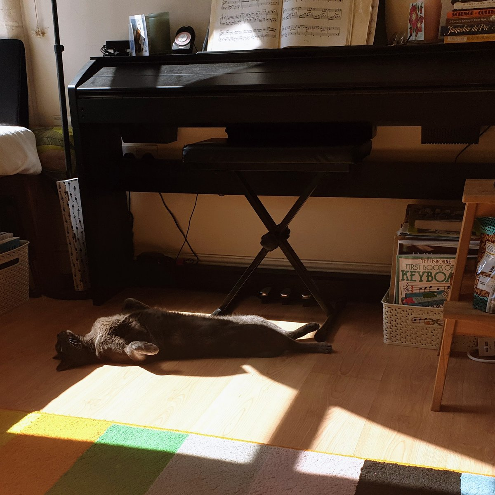

Everybody enjoys fun. Our new prize collection consists of a false moustache, comic songs, funny pictures, photos of pretty girls, money making secrets, guide to dreams, etc. We will send the prize collection, postpaid, on receipt of only six 1 cent stamps https://twitter.com/gutenberg_new/status/1556737101294489600
Just because you can't hire David Bowie as an actor does not mean that you can't hire Weird Al to perform a parody cover of Starman for the shows theme tune.
Pure laziness and a total insult to the fans.
https://twitter.com/davidcapello/status/1555286998440706048 @davidcapello @beast_pixels @aseprite I know there is always the fear of committing internal formats to disk but I think its reasonable to cease support of old undos if you need to.
IE allow breaking changes to bump the version and the undo will stop loading.
When it works, yay, when it doesn't, meh, no big deal.
https://twitter.com/mrdoob/status/1555680569597775872 @mrdoob That reminds me, I'm sure there is some sort of X-COPY interface based idle game just waiting to be made.
Re-live the thrills of copying disks with authentic drive head scrunching noises :)
This sure is some old timey wimey crossy wossy. https://twitter.com/gutenberg_new/status/1555317720937181184
I switched from PC to GBA games in the early 2000s specifically because I figured I could make them faster than they could be cancelled.
Around 6 month or less (sometimes much less) dev time.
and even then I had projects cancelled halfway through :) https://twitter.com/jeremy_peel/status/1554765263265988610
Sunbeam Piano Cat 
https://twitter.com/wetgenes/status/1554873202643537921 @davidcapello @beast_pixels @aseprite The actual undo code is mostly complicated by keeping track of image size changes and other horrible things like that.
Its pretty much all here in lua only.
https://github.com/xriss/gamecake/blob/master/lua/wetgenes/grdhistory.lua
https://twitter.com/davidcapello/status/1554863950537318404 @davidcapello @beast_pixels @aseprite It's just a custom PNG chunk containing msgpack data (compressed with zlib). Which gives a lot of structural freedom but is still in a standard format.
Then all the usual undo stuff within that.
Actually its msgpack within msgpack with each undo state compressed separately.
https://twitter.com/wetgenes/status/1554812609152618497 @davidcapello @beast_pixels @aseprite APNG gets me frames and I use a "sprite sheet layout" to put layers into a single image. So that with metadata means all the pixels are in obvious PNG places and we can still have complex layers to put them all together.
https://twitter.com/davidcapello/status/1554544286531813377 @davidcapello @beast_pixels @aseprite APNG is annoying in that you need the patched libpng and that it is not just a part of libpng as it is such a useful addition.
I have an UNDO chunk that lets me save history with each PNG and a JSON chunk which is just so generic and useful for random bits and bobs.
https://twitter.com/davidcapello/status/1554539754745741312 @davidcapello @beast_pixels @aseprite I'd argue that extending the PNG format and adding custom chunks makes the most sense.
Well it's what I do :)
Not that hard, least it is no harder than dealing with PNG files in general. At the very least I reckon adding a JSON text chunk with extra custom junk is worthwhile.
I thought I had managed to miss all the cultivation based games but it seems that they are only just starting to exist. https://twitter.com/WhatsOnSteam/status/1554194772600004609
How was all of this not in Railroad Tycoon? https://twitter.com/gutenberg_new/status/1554230555255795712
"If you will kindly return my trombone," I tell them, "I will be on my way, as I do not know anything of all this and I would like to get out and see what it is like in Twenty-Five O Seven A.D." https://twitter.com/gutenberg_new/status/1551150284654592001
Beware the LeapSecond my Son! The words that byte, the servers that crash!
Beware the TweetTweet bird, and shun, The Lourless Zuckerass!
New season of primal :) https://www.youtube.com/watch?v=UpPNDoKP6d4
UK peeps can find it on 4od... https://www.channel4.com/programmes/primal
https://twitter.com/wetgenes/status/1550575489940611081 The users, hated them and demanded we remove them.
We did not :)
Here is a playlist of most of them:
https://www.youtube.com/watch?v=AkwvguO0pSU&list=PLdYO3emAg9vB8isfSSWS_ob5gFImFVYPU
RIP Bernie
https://twitter.com/wetgenes/status/1550574350700613634 Since 15 years ago we had a crazy virtual world type thing where you could watch videos with other people and Bernie was making videos at the time we asked him to make some we could use.
Blips, 10 seconds long, we played them randomly in between the requested videos.